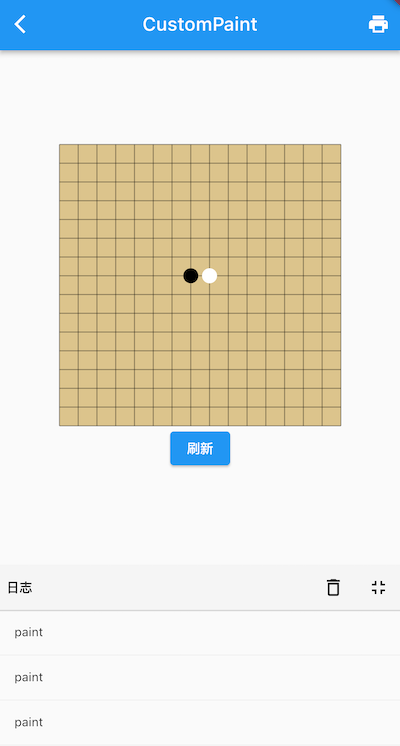

10.4 CustomPaint 与 Canvas
对于一些复杂或不规则的UI，我们可能无法通过组合其他组件的方式来实现，比如我们需要一个正六边形、一个渐变的圆形进度条、一个棋盘等。当然，有时候我们可以使用图片来实现，但在一些需要动态交互的场景静态图片也是实现不了的，比如要实现一个手写输入面板，这时，我们就需要来自己绘制UI外观。
几乎所有的UI系统都会提供一个自绘UI的接口，这个接口通常会提供一块2D画布Canvas，Canvas内部封装了一些基本绘制的API，开发者可以通过Canvas绘制各种自定义图形。在Flutter中，提供了一个CustomPaint 组件，它可以结合画笔CustomPainter来实现自定义图形绘制。
10.4.1 CustomPaint
我们看看CustomPaint构造函数：
CustomPaint({
Key key,
this.painter,
this.foregroundPainter,
this.size = Size.zero,
this.isComplex = false,
this.willChange = false,
Widget child, //子节点，可以为空
})
painter: 背景画笔，会显示在子节点后面;foregroundPainter: 前景画笔，会显示在子节点前面size：当child为null时，代表默认绘制区域大小，如果有child则忽略此参数，画布尺寸则为child尺寸。如果有child但是想指定画布为特定大小，可以使用SizeBox包裹CustomPaint实现。isComplex：是否复杂的绘制，如果是，Flutter会应用一些缓存策略来减少重复渲染的开销。willChange：和isComplex配合使用，当启用缓存时，该属性代表在下一帧中绘制是否会改变。
可以看到，绘制时我们需要提供前景或背景画笔，两者也可以同时提供。我们的画笔需要继承CustomPainter类，我们在画笔类中实现真正的绘制逻辑。
1. 绘制边界 RepaintBoundary
如果CustomPaint有子节点，为了避免子节点不必要的重绘并提高性能，通常情况下都会将子节点包裹在RepaintBoundary 组件中，这样会在绘制时就会创建一个新的绘制层（Layer），其子组件将在新的Layer上绘制，而父组件将在原来Layer上绘制，也就是说RepaintBoundary 子组件的绘制将独立于父组件的绘制，RepaintBoundary会隔离其子节点和CustomPaint本身的绘制边界。示例如下：
CustomPaint(
size: Size(300, 300), //指定画布大小
painter: MyPainter(),
child: RepaintBoundary(child:...)),
)
2. CustomPainter与Canvas
CustomPainter中提定义了一个虚函数paint：
void paint(Canvas canvas, Size size);
paint有两个参数:
-
Canvas：一个画布，包括各种绘制方法，我们列出一下常用的方法：API名称 功能 drawLine 画线 drawPoint 画点 drawPath 画路径 drawImage 画图像 drawRect 画矩形 drawCircle 画圆 drawOval 画椭圆 drawArc 画圆弧 -
Size：当前绘制区域大小。
3. 画笔Paint
现在画布有了，我们最后还缺一个画笔，Flutter提供了Paint类来实现画笔。在Paint中，我们可以配置画笔的各种属性如粗细、颜色、样式等。如：
var paint = Paint() //创建一个画笔并配置其属性
..isAntiAlias = true //是否抗锯齿
..style = PaintingStyle.fill //画笔样式：填充
..color=Color(0x77cdb175);//画笔颜色
更多的配置属性读者可以参考Paint类定义。
10.4.2 实例：五子棋/盘
1. 绘制棋盘、棋子
下面我们通过一个五子棋游戏中棋盘和棋子的绘制来演示自绘UI的过程，首先我们看一下我们的目标效果，如图10-3所示：

代码：
import 'package:flutter/material.dart';
import 'dart:math';
class CustomPaintRoute extends StatelessWidget {
const CustomPaintRoute({Key? key}) : super(key: key);
@override
Widget build(BuildContext context) {
return Center(
child: CustomPaint(
size: Size(300, 300), //指定画布大小
painter: MyPainter(),
),
);
}
}
class MyPainter extends CustomPainter {
@override
void paint(Canvas canvas, Size size) {
print('paint');
var rect = Offset.zero & size;
//画棋盘
drawChessboard(canvas, rect);
//画棋子
drawPieces(canvas, rect);
}
// 返回false, 后面介绍
@override
bool shouldRepaint(CustomPainter oldDelegate) => false;
}
我们先实现棋盘绘制：
void drawChessboard(Canvas canvas, Rect rect) {
//棋盘背景
var paint = Paint()
..isAntiAlias = true
..style = PaintingStyle.fill //填充
..color = Color(0xFFDCC48C);
canvas.drawRect(rect, paint);
//画棋盘网格
paint
..style = PaintingStyle.stroke //线
..color = Colors.black38
..strokeWidth = 1.0;
//画横线
for (int i = 0; i <= 15; ++i) {
double dy = rect.top + rect.height / 15 * i;
canvas.drawLine(Offset(rect.left, dy), Offset(rect.right, dy), paint);
}
for (int i = 0; i <= 15; ++i) {
double dx = rect.left + rect.width / 15 * i;
canvas.drawLine(Offset(dx, rect.top), Offset(dx, rect.bottom), paint);
}
}
再实现棋子绘制：
//画棋子
void drawPieces(Canvas canvas, Rect rect) {
double eWidth = rect.width / 15;
double eHeight = rect.height / 15;
//画一个黑子
var paint = Paint()
..style = PaintingStyle.fill
..color = Colors.black;
//画一个黑子
canvas.drawCircle(
Offset(rect.center.dx - eWidth / 2, rect.center.dy - eHeight / 2),
min(eWidth / 2, eHeight / 2) - 2,
paint,
);
//画一个白子
paint.color = Colors.white;
canvas.drawCircle(
Offset(rect.center.dx + eWidth / 2, rect.center.dy - eHeight / 2),
min(eWidth / 2, eHeight / 2) - 2,
paint,
);
}
2. 绘制性能
绘制是比较昂贵的操作，所以我们在实现自绘控件时应该考虑到性能开销，下面是两条关于性能优化的建议：
-
尽可能的利用好
shouldRepaint返回值；在UI树重新build时，控件在绘制前都会先调用该方法以确定是否有必要重绘；假如我们绘制的UI不依赖外部状态，即外部状态改变不会影响我们的UI外观，那么就应该返回false；如果绘制依赖外部状态，那么我们就应该在shouldRepaint中判断依赖的状态是否改变，如果已改变则应返回true来重绘，反之则应返回false不需要重绘。 -
绘制尽可能多的分层；在上面五子棋的示例中，我们将棋盘和棋子的绘制放在了一起，这样会有一个问题：由于棋盘始终是不变的，用户每次落子时变的只是棋子，但是如果按照上面的代码来实现，每次绘制棋子时都要重新绘制一次棋盘，这是没必要的。优化的方法就是将棋盘单独抽为一个组件，并设置其
shouldRepaint回调值为false，然后将棋盘组件作为背景。然后将棋子的绘制放到另一个组件中，这样每次落子时只需要绘制棋子。
3. 防止意外重绘
我们在上例的基础上添加一个 ElevatedButton，点击后什么也不做：
class CustomPaintRoute extends StatelessWidget {
const CustomPaintRoute({Key? key}) : super(key: key);
@override
Widget build(BuildContext context) {
return Center(
child: Column(
mainAxisSize: MainAxisSize.min,
children: [
CustomPaint(
size: Size(300, 300), //指定画布大小
painter: MyPainter(),
),
//添加一个刷新button
ElevatedButton(onPressed: () {}, child: Text("刷新"))
],
),
);
}
}
运行后我们点击“刷新”按钮，运行后如图10-4所示：

发现日志面板输出了很多 “paint”，也就是说在点击按钮的时候发生了多次重绘。奇怪，shouldRepaint 我们返回的是false，并且点击刷新按钮也不会触发页面重新构建，那是什么导致的重绘呢？要彻底弄清楚这个问题得等到第十四章中介绍 Flutter 绘制原理时才行，现在读者可以简单认为，刷新按钮的画布和CustomPaint的画布是同一个，刷新按钮点击时会执行一个水波动画，水波动画执行过程中画布会不停的刷新，所以就导致了CustomPaint 不停的重绘。要解决这个问题的方案很简单，给刷新按钮 或 CustomPaint 任意一个添加一个 RepaintBoundary 父组件即可，现在可以先简单认为这样做可以生成一个新的画布:
RepaintBoundary(
child: CustomPaint(
size: Size(300, 300), //指定画布大小
painter: MyPainter(),
),
),
// 或者给刷新按钮添加RepaintBoundary
// RepaintBoundary(child: ElevatedButton(onPressed: () {}, child: Text("刷新")))
注意：RepaintBoundary 的具体原理我们将在第十四章中详细介绍。
10.4.3 总结
自绘控件非常强大，理论上可以实现任何2D图形外观，实际上Flutter提供的所有组件最终都是通过调用Canvas绘制出来的，只不过绘制的逻辑被封装起来了，读者有兴趣可以查看具有外观样式的组件源码，找到其对应的RenderObject对象，如Text对应的RenderParagraph对象最终会通过Canvas实现文本绘制逻辑。下一节我们会再通过一个自绘的圆形背景渐变进度条的实例来帮助读者加深印象。